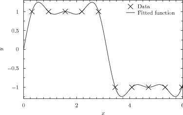
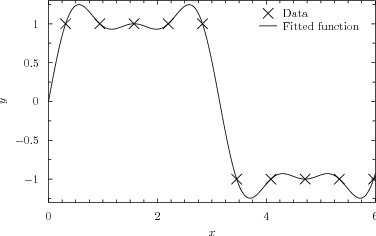

fit [{<range>}] <function>"()" [withouterrors] '<datafile>'
[index <value>]
[using <expression> {:<expression>} ]
via <variable> {, <variable>}
The fit command can be used to fit arbitrary functional forms to datapoints read from files. It can be used to produce best-fit lines for datasets or to determine gradients and other mathematical properties of data by looking at the parameters associated with the best-fitting functional form. The following simple example fits a straight line to data in a file called data.dat:
f(x) = a*x+b fit f() 'data.dat' index 1 using 2:3 via a,b
The first line specifies the functional form which is to be used. The coefficients within this function, a and b, which are to be varied during the fitting process are listed after the keyword via in the fit command. The modifiers index, every, select and using have the same meanings in the fit command as in the plot command. When fitting a function of  variables, at least  columns (or rows – see Section 3.9.1) of data must be specified after the using modifier. By default, the first columns are used. These correspond to the values of each of the arguments to the function, plus finally the value which the output from the function is aiming to match. If an additional column is specified, then this is taken to contain the standard error in the value that the output from the function is aiming to match, and can be used to weight the datapoints which are being used to constrain the fit.
variables, at least  columns (or rows – see Section 3.9.1) of data must be specified after the using modifier. By default, the first columns are used. These correspond to the values of each of the arguments to the function, plus finally the value which the output from the function is aiming to match. If an additional column is specified, then this is taken to contain the standard error in the value that the output from the function is aiming to match, and can be used to weight the datapoints which are being used to constrain the fit.
As the fit command works, it displays statistics including the best-fit values of each of the fitting parameters, the uncertainties in each of them, and the covariance matrix. These can be useful for analysing the security of the fit achieved, but calculating the uncertainties in the best-fit parameters and the covariance matrix can be time consuming, especially when many parameters are being fitted simultaneously. The optional keyword withouterrors can be included immediately before the filename of the datafile to be fitted to substantially speed up cases where this information is not required.
By default, the starting values for each of the fitting parameters is  . However, if the variables to be used in the fitting process are already set before the fit command is called, these initial values are used instead. For example, the following would use the initial values
. However, if the variables to be used in the fitting process are already set before the fit command is called, these initial values are used instead. For example, the following would use the initial values  :
:
f(x) = a*x+b a = 100 b = 50 fit f() 'data.dat' index 1 using 2:3 via a,b
More details can be found in Section 5.6.